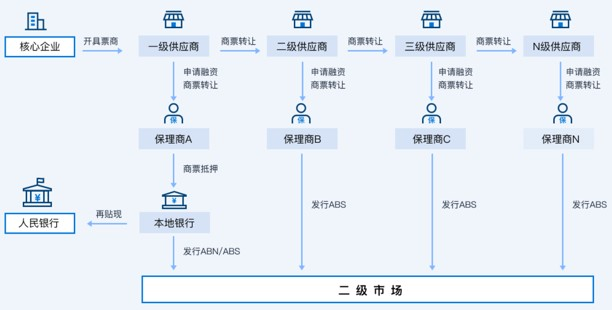
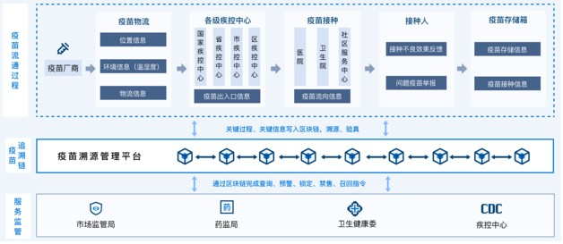
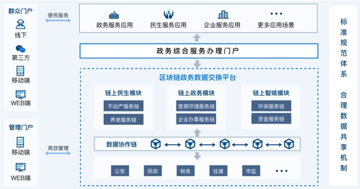
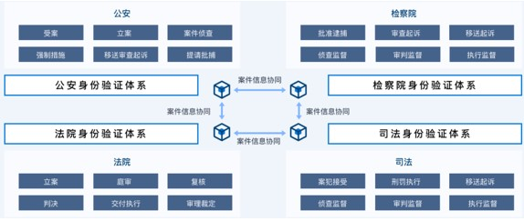
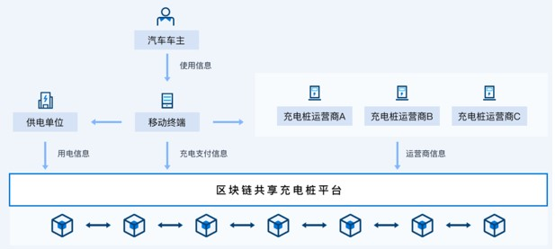

应用案例¶
金融领域¶
趣链科技把握金融科技风口，建设以区块链为核心的新型基础设施，致力于构建立体化产业金融生态圈与服务平台，提供融资服务、支付结算、监管支撑等多领域解决方案，为经济发展注入新动能。
区块链将在 “信任强化，监管治理” 、 “信息共享，打破壁垒” 、 “产品创新，业务重塑” 三个方面赋能金融领域。
接下来，以应收账款为典型应用场景介绍我们的落地方案。
应收账款¶
通过区块链联合多方构建多中心的ABS管理平台， 将企业应收账款转化为标准化数字资产凭证，在平台中实现应收账款的灵活流转、拆分和融资。实现基于核心企业信用的应收账款凭证在供应链上的多级流转，支持拆分、转让和融资，有效惠及除一级供应商外的多级供应商，实现了核心企业信用的多级传导，通过引入外部金融机构，为应收账款提供低成本融资利率。
应收账款存在以下痛点问题：
原始贸易数据伪造 。物流信息、仓单、应收账款伪造，业务风险和金融风险高。
四流难合一 。企业间系统不互通，线下、纸质化传递，企业信息孤岛，风控难度大。
核心企业信用难传递 。传递只在一级，无法传递其他供应商，生态服务范围受限。
本方案具有以下价值：
降低整个产业的融资资本 。通过区块链打造的多级供应商融资体系，促进全链条信息共享，实现供应链金融可视化，能够依托核心企业的信用，降低中小企业的融资成本，提高资金流转的效率，间接降低整体的生产成本，让企业的产品更有竞争优势。
挖掘优质资源 。区块链使业务场景的真实性得到保障，同时依托核心企业的付款，使得整个产业链条上的企业都能融资，且是安全的融资，让金融机构能够更高效、便捷、稳健地将服务贯穿整个产业链，因此，区块链是优质资产的“挖掘机”。
穿透式监管 。由于区块链分布式账本技术具有不可篡改、可追溯的特性，监管部门的穿透式监管更容易实现，更多的金融机构可以安心服务实体经济，确保资金流向实体经济。同时，区块链的数据共享方式，可以防止重复质押和空单质押，推动了供应链金融健康稳定发展。
落地方案架构如下：

更多关于金融领域的应用请参考 https://www.hyperchain.cn/industry/finance
民生领域¶
趣链科技借助区块链技术特性构建民生领域协同平台，提升业务效率，保障数据隐私性、安全性、可靠性基础上的数据共享，推动区块链技术在民生领域更广泛、更深入地应用，实实在在地增进人民群众的民生福祉。
区块链将在 “构建民生协同平台，提高协作效率” 、 “数据信息安全可靠，建设可信体系” 、 “推动民生领域广泛应用，促进民生改善” 三个方面赋能民生领域。
接下来，以疫苗溯源为典型应用场景介绍我们的落地方案。
疫苗溯源¶
以区块链+疫苗IoT技术为基础的疫苗流转监管体系，可视化完成问题疫苗一键锁定、一键回收，帮助快速锁定批次和大箱的监管码。对相关数据的全生命周期实现确权管理。数据从何而来、由谁进行，都会有精准记录，并且不可篡改，实现疫苗信息化数据的互联互通。
疫苗溯源存在以下痛点问题：
疫苗信息不可信 。假疫苗现象在医疗领域诟病已久，疫苗流转全流程信息不透明，各机构物流渠道流通不公开，疫苗信息真实性无法保证。
信息跟踪不及时 。疫苗生产、记录、流转等情况经过多方，数据追踪效果差，传统模式多为线下协同更是难以追溯可信信息。
医疗产品监管难 。医疗信息化产品准入标准缺失，监管制度模糊。医疗机构、药企、医疗器械企业等都有自己的管理系统，协同效率低，监管难度大。
本方案具有以下价值：
数据真实可信 。基于区块链技术实现疫苗从生产到接种全流程信息的真实、可靠、不可篡改，解决长期困扰的假疫苗问题。
信息跟踪追溯 。利用区块链技术可以记录疫苗渠道流通情况、物流信息，货物运输中断或丢失，可快速跟踪追溯进行处理。
加强质量监管 。智能合约自动执行，加强质量监管，杜绝质检不合格、流通存储不规范疫苗继续流通；跨机构间的交易与管理全程可追溯便于监管。
落地方案架构如下：

更多关于民生领域的应用请参考 https://www.hyperchain.cn/industry/livelihood
政务领域¶
趣链科技深入探索政务领域，基于国产自主可控的区块链底层技术，为政务提供多方协作、真实可信、数据资产化的基础设施，结合业务形成成熟、有价值的解决方案。目前已覆盖全国多个城市，实现跨部门跨机构的可信数据共享以及高效业务协作，提高政务服务效率，助力政务数字化改革。
区块链将在 助理数字政务 、 优化便民企业 、 推动信息建设 三个方面赋能政务领域。
接下来，以政务数据治理为典型应用场景介绍我们的落地方案。
政务数据治理¶
基于区块链打造的政务数据治理平台，包含部署在市级的“数据协作链”、以及部署在区级的“应用管理链”两层区块链架构，数据协作链的主要价值在于确定数据的“权力”与“责任”，应用管理链的主要价值在于确定数据的“利用”流程，两层架构并行最终可以确认数据的“责权利”，并以此为依据进行后续的数据治理工作。通过建立一整套合理健全的数据共享机制来保证各委办局的数据安全，以及可以在高位调度的基础下，形成一套透明可追溯的数据共享工作奖惩机制。
政务数据治理存在以下痛点问题：
政府部门共享信息过程复杂 。存在数据隐私、数据安全问题，涉及多部门协调沟通，审批流程冗长。
数据权责划分不清 。目录变更随意、共享随意，存在数据缺位、越位的问题。
共享时效性弱 。数据和目录“两张皮”，目录数据不全、不准、用管不同步、更新不实时。
本方案具有以下价值：
全区数据高效汇集，状态可见、可用、可查 。取代效率低下且准确率低的线下收集方式，通过各个委办局自行在平台上数据建立目录并挂载数据，有效降低了人员投入成本，增加准确性，提高整体工作效率。
数据使用全流程可追溯，明确了数据“责权利” 。通过数据协作链与应用管理链的两层架构，使得数据的来源、流动、去向等信息全部进行有效记录并不可篡改，同时各方进行数据获取之前需要数据所有者进行授权，保证了数据所有者的权力，促进了多方参与情况下的数据治理工作。
完善的联盟链积分体系，为工作推进保驾护航 。凭借区块链多方共识、难以篡改的特性，在高位调度统筹的基础上建立一套完善的联盟链积分体系，从而激励各方进行数据共享，各委办局使用积分进行各方数据的交换，并具有相应的考核机制，在推动工作的同时，让整个区块链生态形成了良性循环。
方案架构图如下：

更多关于政务领域的应用请参考 https://www.hyperchain.cn/solution/government
司法领域¶
趣链科技针对司法领域现有难题进行深度探索，基于国产自主可控的区块链底层技术，为司法领域提供区块链可信基础设施与相应的解决方案，以技术赋能司法，实现司法数据可信互通、业务可信协作、流程可信追溯，提高司法业务效率，促进司法规范化、标准化、公开化转型。
区块链将在 助力电子数据可信固证 、 推动司法业务规范化、透明化 、 促进跨机构业务高效协同 三方面赋能司法领域。
接下来，以公检法司联盟协作为典型应用场景介绍我们的落地方案。
公检法司联盟协作¶
通过构建公检法司联盟链，并基于该联盟链建设公检法司协作系统。通过区块链+数据共享打破各机构间信息孤岛，实现案件数据实时可信共享互通。案件数据、流转数据全流程记录在多方共识的分布式账本上，并在各个关键环节进行数据校验，确保数据真实、不可篡改，同时加强公检法司多部门相互监督、相互制约。
公检法司联盟协作存在以下痛点问题：
业务数据不互通 。公检法的业务协作依赖多方数据互通，而目前尚存在存在数据转移单向非共享、数据不互通、交互不流畅的情况。
业务协作不规范 。公检法司工作开展过程，各机关在处理案件过程中，存在业务不合规、监管不到位等问题。
业务衔接流程不通畅 。由于数据孤岛以及司法资源短缺，刑事案件与执法结果在各机构间的协作流转往往不够及时，存在业务断层，传递成本、沟通成本较高。
本方案具有以下价值：
打破数据孤岛 。案件数据在链上数字化实时高效可信互通，打通各司法机构间系统数据壁垒，免除纸质材料线下送转，简化案件材料移送、信息调阅流程。
提高协作效率 。各司法机构系统通过区块链相互链接进行业务协作，实现案件线上移送、案件退回提醒，及时获取案件状态等功能，提高机构间业务协作效率。
增强监管能力 。全程记录案件移送、退回情况，便于后续定位阻滞环节，从而对各司法机构进行监督管理，形成公检法司业务数据闭环，实现穿透式监管。
挖掘数据价值 。通过各机构业务数据共享，形成案件数据流，便于进行案件数据统计与分析，深度挖掘数据价值，优化公检法司业务流程与服务质量。
方案架构图如下：

更多关于司法领域的应用请参考 https://www.hyperchain.cn/industry/judicatory
能源领域¶
趣链科技结合能源行业分布式交易系统和清洁能源普及两大趋势，利用区块链技术提高能源生产效率，降低管理成本，增加监测准确度；提供安全交易保障并降低沟通成本、实时支付清结算系统。
区块链将在 助力数据电子化、标准化 、 实现数据可追溯，易于协同 、 提高交易效率与安全 三个方面赋能能源领域。
接下来，以新能源充电桩为典型应用场景介绍我们的落地方案。
新能源充电桩¶
通过区块链互联充电桩多运营主体，实现高效的充电桩支付结算服务，提升用户体验。基于区块链的分布式移动数字身份共享充电桩平台以移动智能终端身份认证技术为基础，通过移动智能终端作为电动汽车车主身份认证与密钥的载体，使电动汽车车主在充电时，可以对充电行为进行有效确权，从而为支付清算提供基础。
新能源充电桩存在以下痛点问题：
多主体清算难 。充电桩多运营主体间的数据协同要求高，传统充电桩未建立数据共享形式，多主体间难以进行清结算。
支付结算服务要求高 。车主、供电商与运营商之间需搭建信息共享通道，打通业务流水线，支付结算服务效率要求较高。
新基建新要求 。新能源汽车充电桩作为“新基建”七大领域之一，行业利好信号再度加强，需求缺口大且充电桩区域分布较为不均衡亟待提高。
本方案具有以下价值：
可信数据交换 。构建车主与运营商间的可信数据交换通道，利用区块链去中心化特性，保证数据在存储、传输、验证过程中均基于分布式的系统结构，保证了充电桩数据交换的完整性与可信度。
可信数据传输 。实现多方间的可信数据传输，以更好地进行协作与清算，利用区块链密码学原理，交易不可被篡改的特性，保证数据传输的可信环境。
资金数据协同 。实现充电行为资金流与数据流的“二流合一”，通过区块链记录充电信息，通过智能合约进行充电服务的清结算。
方案架构图如下：

更多关于能源领域的应用请参考 https://www.hyperchain.cn/industry/energy